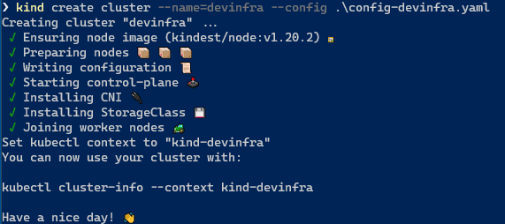

KinD
KinD installation
Following the quick-start, installing kind is fairly straightforward.
choco install kind
curl -Lo ./kind https://kind.sigs.k8s.io/dl/v0.11.1/kind-linux-amd64
chmod +x ./kind
mv ./kind /some-dir-in-your-PATH/kind
Creating a cluster with terraform
Edit terraform.tfvars to your needs. Then run terraform apply to create the cluster.
cd ./src/clusters/kind
terraform init
terraform apply --auto-approve
Verify with
kubectl cluster-info --context kind-devinfra
Creating a 3-node k8s-cluster
An example of running a multi-node cluster on docker can be done with kind. There are some restrictions with Windows. The provided config ./src/clusters/kind/config-devinfra.yaml provides a 3-node cluster. There is also a traefik ingress test setup to verify your networking configuration.
To fire up the cluster, run the following:
kind create cluster --name=devinfra --config ./src/clusters/kind/config-devinfra.yaml
We specifically expose ports 80, 443 and 8100 to this cluster on ip 127.0.0.1. Think carefully what ports to expose. kind has no update strategy to change this afterwards.

The cluster creation automatically add configuration to connect to the new cluster
kubectl cluster-info --context kind-devinfra
To delete the cluster again
kind delete cluster --name devinfra
When using WSL (Windows Subsystem for Linux), you need to copy the context configuration to your .kubeconfig file on the WSL home directory.
cp /mnt/c/users/$(whoami)/.kube/config ~/.kube/config